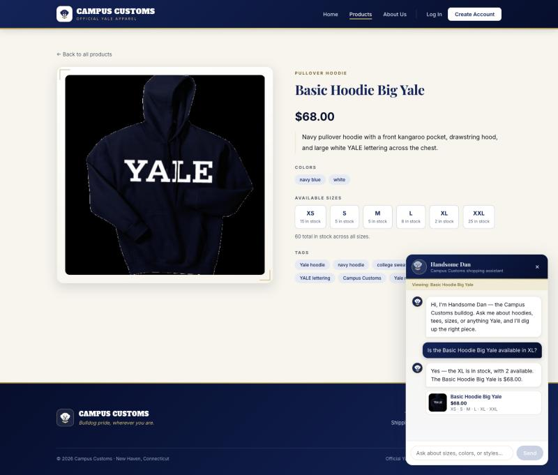
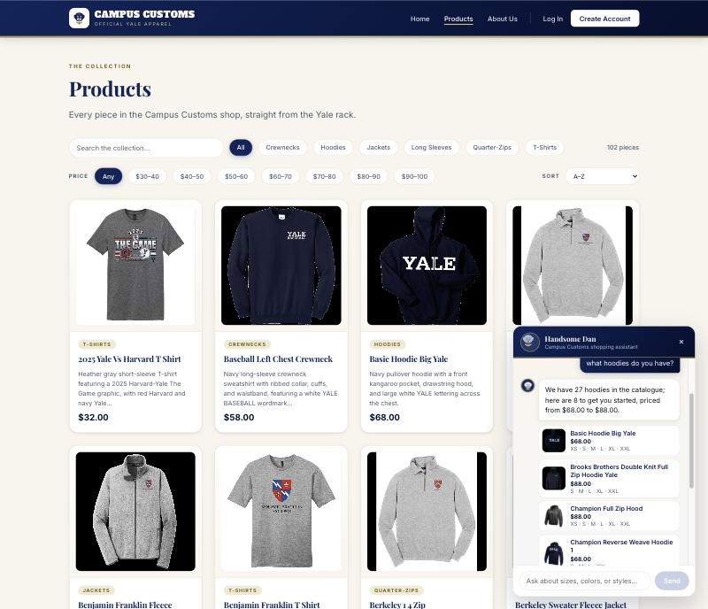
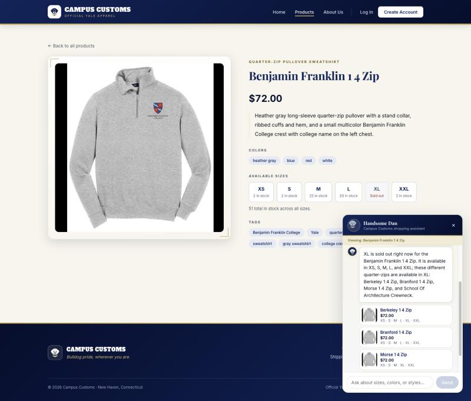

The chat reports stock and price honestly from the database
Asked in the chat, on the Basic Hoodie Big Yale product page: “Is the Basic Hoodie Big Yale available in XL?”

Handsome Dan answers: “Yes — the XL is in stock, with 2 available. The Basic Hoodie Big Yale is $68.00.”
Both numbers are verifiable in the same screenshot. The product page behind the chat panel shows the price as $68.00 and the size grid shows XL · 2 in stock — the chat reply matches the page, and both come from the same database rows.
| Field | Database | Chat said | |
|---|---|---|---|
| Price | catalogue.price = 68.0 | $68.00 | match |
| XL stock | inventory.quantity = 2 | 2 available | match |
check_size_availability tool, which reads
catalogue and inventory directly, and reported the
exact figures rather than a plausible-sounding approximation.
Dynamic product cards populate after a category question
Asked in the chat, on the Products page: “what hoodies do you have?”

Handsome Dan replies: “We have 27 hoodies in the catalogue; here are 8 to get you started, priced from $68.00 to $88.00” — and eight product cards appear beneath it, each with its real photo, name, price, and the sizes currently in stock.
The count is correct: 27 products in the catalogue have a garment type in the Hoodies category. Every card is a live catalogue product, and clicking one opens that product’s full detail page in the main area while the chat panel stays open.
ChatReply.products), not prose, and the
panel renders whatever that list contains. Because the cards are built from
catalogue rows, a product the model invented could not appear here — and
the names, prices, and images shown are the shop’s real ones.
Sold-out size suggestions: an honest “no”, plus a way forward
Asked in the chat, on the Benjamin Franklin 1/4 Zip product page — whose XL is genuinely out of stock: “Do you have this in XL?”

Handsome Dan replies: “XL is sold out right now for the Benjamin Franklin 1 4 Zip. It is available in XS, S, M, L, and XXL; these different quarter-zips are available in XL: Berkeley 1 4 Zip, Branford 1 4 Zip, Morse 1 4 Zip, and School Of Architecture Crewneck.”
The page behind it independently confirms the honest part: the size grid shows XL · Sold out in a dashed, greyed box while the other five sizes show real counts. The alternative cards then each list XL among their in-stock sizes, and all are the same category and the same $72.00 price point as the item the shopper was looking at.
find_alternatives_in_size, which returns
only same-category products that actually have that size in stock, sorted by
closeness in price. This matters commercially: 145 of the 612 size rows in
inventory are at zero, so roughly a quarter of size questions would
otherwise end in a lost sale.